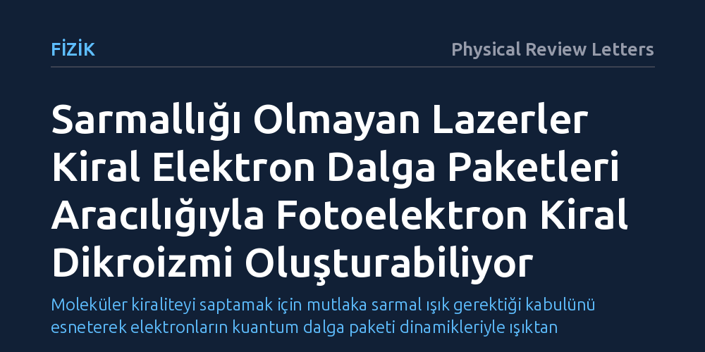

FIZIK · Physical Review Letters · 2026-09-09
Araştırmacılar, kiral molekülleri saptamak için dairesel kutuplanmış lazerlerin şart olup olmadığını araştırdı. Çalışma, sarmallığı olmayan lazerlerin de uyarılmış kiral elektron dalga paketleri üzerinden fotoelektron kiral dikroizmi oluşturabildiğini gösterdi.
Moleküler kiraliteyi saptamak için mutlaka sarmal ışık gerektiği kabulünü esneterek elektronların kuantum dalga paketi dinamikleriyle ışıktan bağımsız kiral yanıt üretebileceğini ortaya koyuyor.

Kiralite, bir cismin veya molekülün sağ ve sol el gibi ayna görüntüsüyle üst üste çakışmaması durumudur. Biyolojide ve kimyada bu geometrik asimetri hayati bir rol oynar; çünkü aynı kimyasal formüle sahip iki ayna görüntüsü molekül, canlı organizmalarda tamamen farklı tepkilere yol açabilir. Örneğin bir kiral molekül şifalı bir ilaç etkisi gösterirken, onun ayna görüntüsü biyolojik olarak etkisiz kalabilir veya zararlı sonuçlar doğurabilir. Bu nedenle kiral moleküllerin sağ veya sol elli olduğunu hızlı ve güvenilir biçimde ayırt etmek, temel bilimlerin ve ilaç endüstrisinin en kritik hedeflerinden biridir.
Fotoelektron kiral dikroizmi (PECD), rastgele yönlenmiş kiral molekülleri yüksek hassasiyetle tanımlamak için kullanılan güçlü bir spektroskopi yöntemidir. Bu teknikte moleküller lazer ışığıyla uyarılıp fotoiyonlaştırılır; yani molekülden elektron koparılır. Klasik kabule göre, koparılan elektronların ileri ve geri yöndeki momentum dağılımında kiral bir asimetri görebilmek için gelen lazer ışığının da dairesel kutuplanmış, yani belirli bir sarmallık (helisite) taşıyan bir ışık olması şarttır.
Ancak bu durum fizikçilerin aklına temel bir soru getirdi: Kiralite ayrımı yapmak için ışığın kendisinin mutlaka sarmal olması şart mıdır, yoksa molekülün kendi iç elektron dinamikleri kullanılarak sarmallığı olmayan bir lazerle de benzer bir kiral asimetri oluşturulabilir mi?
Fizikçiler bu temel soruyu yanıtlamak amacıyla rastgele yönelmiş kiral moleküller ile lazer alanları arasındaki etkileşimi kuramsal çerçevede modelledi. Araştırmacılar, dairesel veya sarmal kutuplanma taşımayan, yani helisitesi sıfır olan lazer darbelerinin molekül üzerindeki etkisini ileri kuantum dinamik simülasyonlarıyla adım adım inceledi.
Yöntem, elektronların molekülden tek bir hamlede doğrudan koparılması yerine iki aşamalı bir uyarılma sürecini temel alıyor. İlk aşamada sarmalsız bir lazer darbesi moleküldeki elektronları uyararak kiral bir elektron dalga paketi oluşturuyor. İkinci aşamada ise bu uyarılmış dalga paketinin iyonlaşması sonucu uzaya saçılan fotoelektronların momentum dağılımları ve olası yönelim asimetrileri sayısal olarak hesaplandı.
Çalışmanın ortaya koyduğu temel bulgu, lazer ışığında hiçbir sarmallık bulunmasa dahi fotoelektron momentum dağılımında belirgin bir kiral dikroizm sinyalinin üretilebildiğidir. Işık sarmal olmasa da molekülün kendi iç potansiyel geometrisi kiral olduğundan, lazer darbesiyle uyarılan elektron dalga paketi molekül içinde zamana bağlı kiral bir yörünge hareketi sergilemektedir.
Bu kiral elektron dalga paketi iyonlaştırıldığında, serbest kalan elektronlar ileri ve geri yönlere eşit olmayan biçimde dağılmaktadır. Başka bir deyişle, molekülün kiral hafızası uyarılmış elektron durumuna aktarılmakta ve ardından gelen fotoiyonlaşma adımında ölçülebilir bir kiral asimetri sinyaline dönüşmektedir. Böylece sarmallık ışıktan değil, elektronun uyarılmış kuantum hareketinden kaynaklanmaktadır.
Bu sonuç, kiral moleküllerin optik olarak incelenmesinde uzun süredir geçerli olan kuramsal bir kısıtlamayı esnetmektedir. Fotoelektron kiral dikroizmi deneylerinde sarmal veya dairesel kutuplanmış özel lazer kaynaklarına bağımlılığı azaltarak, polarizasyonu daha basit veya doğrusal lazer sistemleriyle de kiral spektroskopi yapılabileceğine işaret etmektedir.
Yine de çalışmanın kapsamını ve sınırlarını doğru değerlendirmek gerekir. Bu araştırma kuramsal modelleme ve bilgisayar simülasyonlarına dayalı bir ilke kanıtıdır; öngörülen etkinin laboratuvar ortamında gerçek moleküler gazlar ve gürültü altında deneysel olarak doğrulanması gerekmektedir. Bağımsız deneysel ölçümler tamamlandığında, lazer-madde etkileşiminde yeni yöntemlerin önü açılabilir.